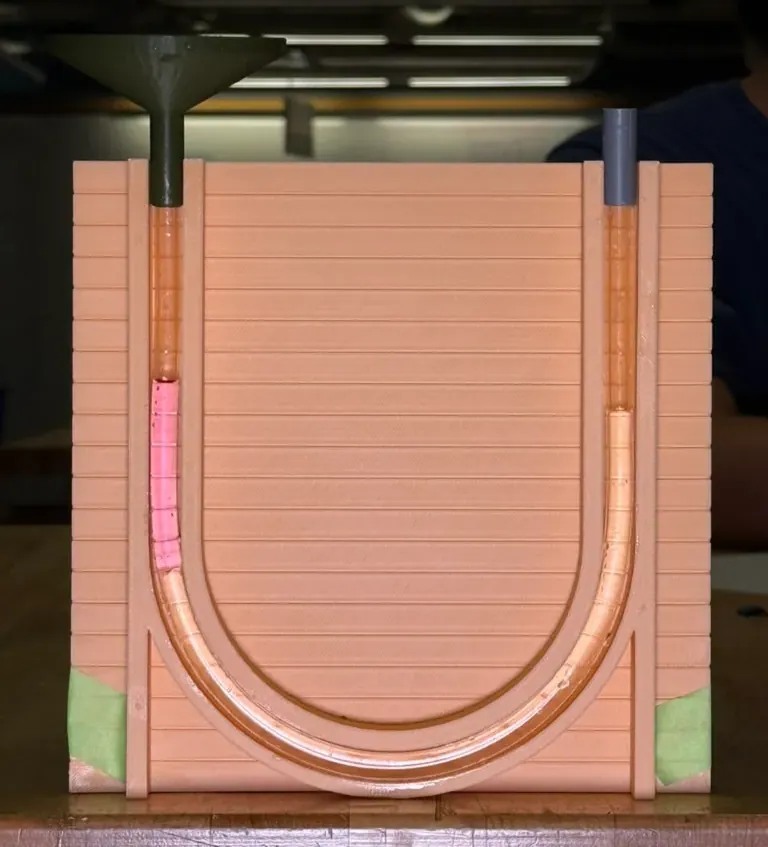
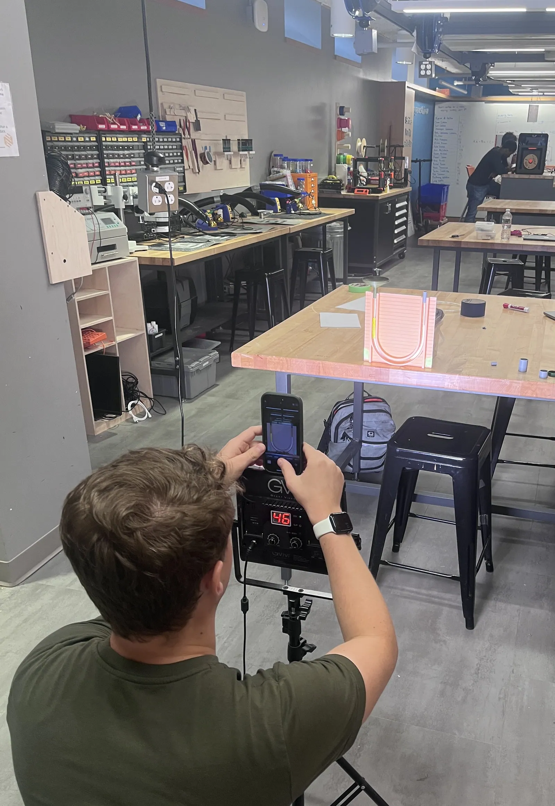
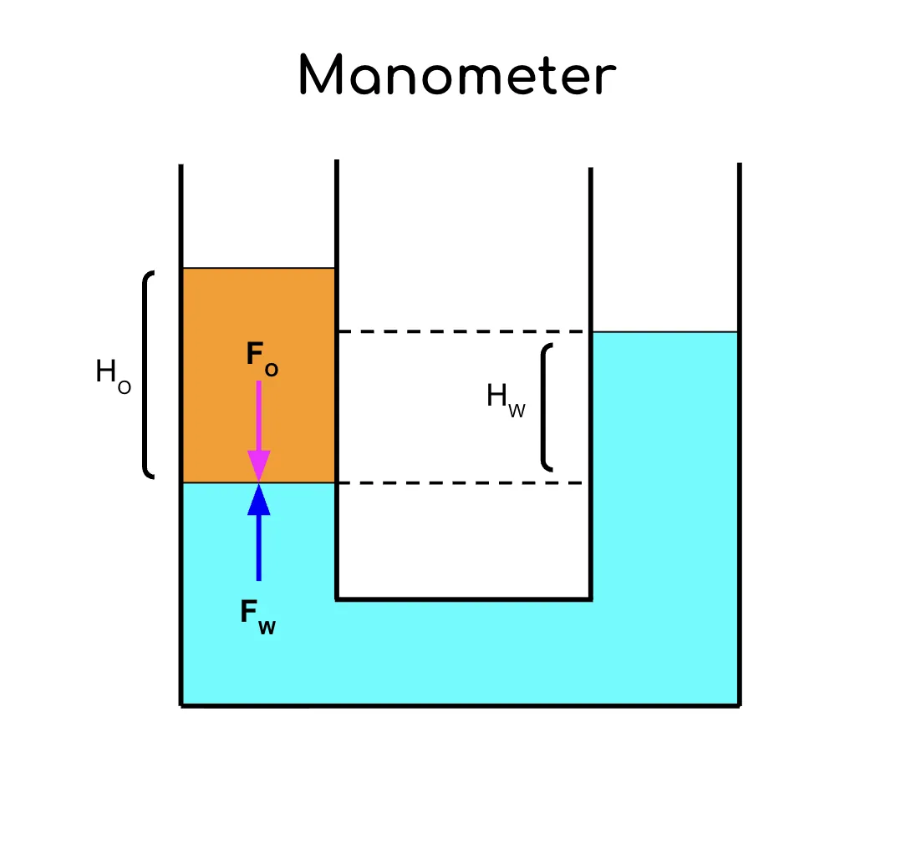
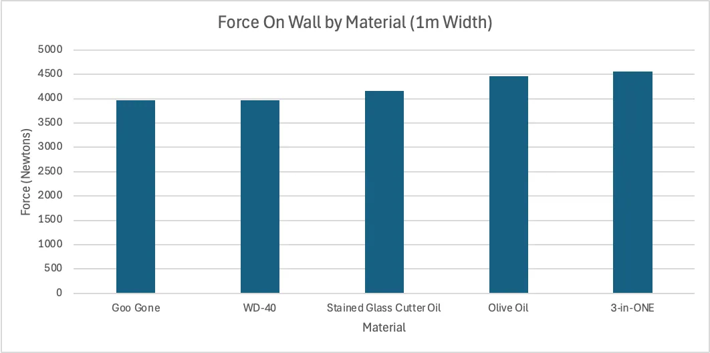

Lab 1: The Plugged Manometer

Introduction
We have been posed four quandaries:
- How can we use fluid mechanics, a manometer, a camera, and pure intellect to determine what happens if we plug one end of the manometer and why?
- Also, can we use those same tools to determine the densities of various fluids
- Why are the two sides of a manometer not always the same even if filled with only one liquid?
- How will using these other fluids affect our COMSOL box of static liquid simulations?
These are questions that have been plaguing ME51 students for countless days. Here is our answer.
Process (Question 1)
- The Tygon tube was partially filled with water and taped to the wall in the desired “U” shape.
- A ruler was placed next to it for scale. A level was used ensure it was vertical level, then it was taped to the wall as well. Next the height difference between the two sides of the manometer measured at 0.3 cm using the ruler for calibration and pixel measurements.
- Three different plugs were designed using the specific exterior diameter of the Tygon tubing and were 3D-printed using PLA, TPU, and PTEG respectively. None of these worked better than David’s index finger, so that was used instead.
- The tape on the right side of the “U” was remove from the wall while the left side was plugged. The ruler was used once more in conjunction with pixel measurements to calculate the maximum height difference.
Process (Question 2)
- A jig to hold the manometer in the desired “U” shape was designed using SolidWorks and 3D-printed out of PLA. The Jig included 1 mm horizontal inset lines spaced 9 mm apart to provide a scale for later pixel measurements. They run the entire width of the jig to act as a datum for finding the rates of camera barreling. A funnel and a support piece with diameters slightly larger (+0.5mm) than the side walls of the jig we also designed and 3D-printed out of PLA to keep the U-tube manometer in place and make the pouring of liquids into the manometer easier.
- Specific positioning to ensure precision across repeated trials
- Manometer jig was taped vertically to the table 2.5cm from its edge. A bubble level was used to confirm its verticality.
- Light source was placed 80 cm backwards from the center of the U-tube manometer using a large carpentry square to mark the floor and to ensure the a phone placed on the light was at a height were it was directly horizontal from the center of the jig.
- The same iPhone 12 was used at this position with a 3.7x zoom for every photo. The grid and level features we also used so the only factors changing between photos were the liquids within the manometer.

- A MatLab program was used to calculated pixel to meter (distance) from our PNG with an accuracy of about +-3 pixels.
- We used iPhone built in lens correction to account for barreling
- Measure height difference of the two fluids relative to the plane of force application between the two fluids and evaluated pressure using the formula derived below.
The Mathematical Derivation (Question 2)

Setting up a Free Body Diagram for our manometer, since the system is at equilibrium, we can say that the sum of all the forces in the y direction is zero, and therefore (force of water on other fluid) and (force of other fluid on water) are equal.
Since , we can find the force of the water and the other fluid.
The represents the internal cross sectional area of the tube at the point where the force is applied. Since this must be same for both forces (as we are evaluating on the same plane of force application) we can substitute the values for our forces into our equation, and the on both sides of the equation cancels. As such we are left with:
From the differential equation , we know that the pressure of the water and the other fluid at any given point is…
Where represents the height difference between the maximum height of the water and the plane of force application between the two fluids on the other side of the manometer (where we have shown there must be equal pressure since the system is at static equilibrium). Additionaly, here represents the analogous height difference between the maximum height of the other fluid and the plane of force application. Substituting our values for pressure into our equation including (since the top of the manometer is exposed to the open air on both ends) gives:
The on both sides of the equation cancels out giving:
The gravity terms on both sides of the equation also cancel out so we have:
Rearranging, we find that the density of the other fluid is equal to the density of water, times the ratio of the height differences between of both fluids’ maximum height and the plane of force application.
Results (Question 1)
- When one end of the manometer jig is plugged, the maximum height difference between the two sides was found to be primarily a function of the length of the tube and the quantity of water within it. This was due to the fact that the plugging one end stops that side from experiencing atmospheric pressure. As such, the atmospheric pressure exerted on the other end is enough to stop the water from flowing out of the tube. In practice, there is a limit to how long this affect can be stretched of about 10m, though that is due to parts of fluid mechanics not yet covered in ME51. Here is a video by physicist Steve Mould explaining it: Everyone Was Wrong About Maximum Siphon Height - YouTube
Results (Question 2)
5 water-insoluble fluids were compared to tap water from the sink in the Nolop makerspace (which was tested to have a density of ). The fluids and their calculated densities were:
- Pompeian brand extra virgin olive oil
- Goo Gone Goo and Adhesive Remover
- Novacan brand stained glass cutter oil
- WD-40 multi-use product aerosol
- 3-in-ONE multi-purpose oil
Below is going over the values used to calculate these values as well as the percent error of these calculations relative to the listed density ranges on the safety data sheet (SDS) files associated with these products (fluid names within the table have links to these).
The average percent error by magnitude was 0.57%, with two of the fluids falling within the listed density ranges for these products. By magnitude, the fluid with largest percent error in its calculation was the stained glass cutting oil at -1.69% outside of the given range. A possible source for this error is that its SDS listed their known density measured at 15°C. Nolop, where the experiments were preformed, is kept at approximately 20°C which likely had an effect on density as materials generally expand (and thus become less dense) when heated. Additionally this was the only product for which the listed not to list a range of densities on the SDS, instead opting state that the density was equal to exactly at 15°C. Expansion due to temperature may have also played a role in the -0.47% error found for the density of the extra virgin olive oil. As for the 3-in-One multi-purpose oil, the given density range is rather large which is almost triple the next largest range. Because of this large range, the density of oil may simply be highly dependent on other factors in a way that the others are not, which contributed to the error.
Why the Levels Are Not Exactly the Same (Question 3)
In the ideal manometer derivation it is assumed that the pressure immediately below each free surface equals the outside (atmospheric) pressure. In reality the liquid/gas interface is curved, and a curved interface sustains a pressure jump given by the Young–Laplace relation. That means the liquid pressure just below the meniscus is where , is the surface tension at the liquid-air interface, and and represent the radius of each respective meniscus as such the height differential on one side of the manometer could be upwards of where is the angle relative to the horizontal due to slight asymmetries (scratches, contamination, wetting from an a prior experiment, slight angle differences, etc).
Additionally, we weren’t using pure at a constant temperature for our experiments. As such, there could be slight temperature, salinity, or dissolved gas gradients across the fluid which are accounting for the discrepancy. Also since the water is a liquid there are small dynamic effects occurring including convection and vibrations that could affect the levels of the water in an unequal way.
The way to solve for these would be use a system that accounts for (Young-Laplace capillarity) like a “U” shaped tube with perfectly vertical walls that also has a perfectly smooth interior and no contaminants. The water used would also have to completely pure and have no temperature gradients. Then it would just have to be filled in a way to make the effects of any fluid dynamics occurring negligible.
Data Table (Question 2)
| Fluid Used | Water Height Difference | Oil Height Difference | Calculated Density of Tested Fluid | Known Density Range for Tested Fluid based on SDS | Within Range? | %Error Outside of Range |
| Extra Virgin Olive Oil | 5.1 cm | 5.6 cm | No | -0.47% | ||
| Goo Gone | 3.4 cm | 4.2 cm | Yes | 0.00% | ||
| Stained Glass Cutter Oil | 5.0 cm | 5.9 cm | No | -1.69% | ||
| WD-40 | 4.7 cm | 5.8 cm | Yes | 0.00 | ||
| 3-in-ONE Multi-Purpose Oil | 4.0 cm | 4.3 cm | No | 0.78% |
COMSOL Simulation (Question 4)
After collecting data for our 5 materials and calculating their densities, The values were plugging into COMSOL to find out if in a “box”, what would the force each of these fluids apply on the wall?
The force on the wall varies by fluid, shown in the graph below. In particular, the greater the fluid’s density, the greater the force exerted on the wall by the fluid. Given that force is related to pressure, which is equal to the weight of the fluid above a particular point, , these results are consistent with what was expected.

Reflection
- What we learned
- How to predict hydrostatic behavior of a fluid in a manometer.
- How to measure distances accurately using a camera and estimating the error in these measurements.
- How to determine the density of a fluid (lighter than water, non-soluble in water) using a manometer.
- What we were most proud of
- Our data matched very well to the expected densities of the fluids found online. This was unexpected because of the simplicity of the calculations, and as Question 3 discussed, there is curvature and purity of the water that wasn’t included in the experiment. Rarely do labs work as intended, and almost never on the first try. (I think we deserve full points personally)
- What took a while (was tough)
- Measuring the pixels distances was a bit tedious, but after some inconsistencies we asked ChatGPT to modify the code to only allow for completely vertical distances, and that decreased error quite significantly.
- Simply finding five fluids that were non-soluble in water and lighter than water was more difficult than expected, see below.
- Most spectacular failure
- We printed 3, 3d-Printed plugs for one end of the manometer for Question 1 and none of them were better than a finger. Maybe we should have 3-d printed a finger instead.
- Additionally, some of the fluids that we tested could not be used. We could have, and should have done some preliminary research on the solubility of the fluids we had. We tested and failed with:
- Honey
- Soy Sauce
- Dish Soap
- Wood stain
- A water based glass-cutting dye
- The blood, sweat, and tears we put into this lab (This is a joke)
9/19/25
Tommy Giglia, David Litvak, & Jake McPherson
Originally written in Notion.